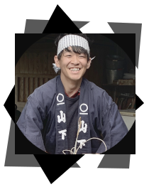
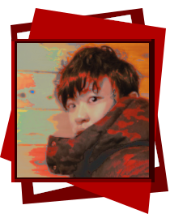
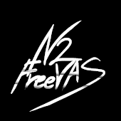
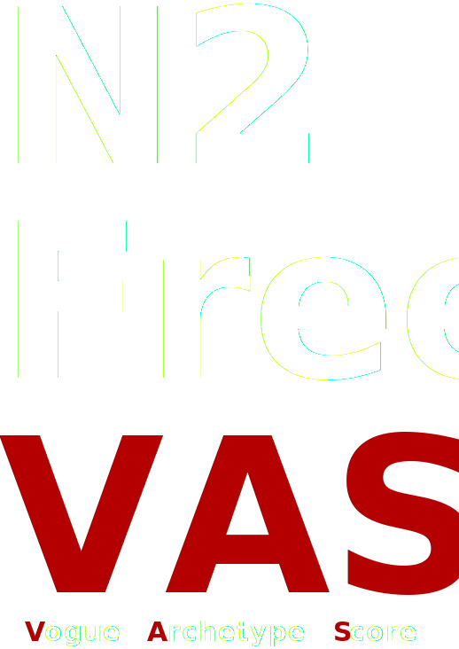

profile
愛知県の大学院に在学中の学生．
マイペースにうるさく生きている．
たまに出る早口が欠点．
大衆向けの中華料理とイタリアンを好み，
コンビニ弁当が苦手
続けていることは，筋トレ，脳トレアプリ

● ののやま たろう
| 在籍： | 名城大学大学院 情報工学専攻 |
|---|
| 研究室： | 知的センサ情報処理研究室 |
| 連絡先1： | 193426012 [at] ccalumni.meijo-u.ac.jp |
| 連絡先2： | nonodethcloud [at] icloud.com |
| 使用言語： | Python,HTTP/CSS/JS,MATLAB,C++,Java |
| 研究： | 色彩科学 (B4) > センサ工学 (M1) |
| Peakスコア： | 700前後 |
Profile 2
アーティストとしての側面.
人間は「表現」を高度に利用する生物であり，
もはやそれは人間の義務ですらあると考える．
人生最大の目標は，
持ち家を自分の絵画で埋め尽くすこと．

● N2 FreeVAS (n2 freevas, N2)
| Pronunciatian: | エヌツーフリーヴァス，[n-tú frívˈʌs] |
|---|
| LikePson: | 頑張る人，芸術を愛している人 |
|---|
| HatePson: | 何も考えていない人，よく貶す人 |
| Color: | 赤色 (トマト以外) |
| Artist(pass)： | Claude Monet, Johannes Vermeer |
| Artist(live)： | Gerhard Richter，Banksy |
| Music： | Lady Gaga, Skrillex, Perfume |
| Classic： | Mozart「魔笛」夜の女王のアリア ２幕 |
| その他： | 名詞単体で使うときは -> N2 FreeVAS,
文中で使うときは -> n2 freevas
(という傾向がある) |

● N2FreeVASとは何なのか
N2とは私の苗字から来ています
(Nono > NN > N2)．
VASは，canvasの語尾から来ており，
( FreeCanvas = 自由なキャンバス = 落書き )
というミーニングで
よく絵画のサインに用いていました．
N2FreeVAS,つまりNonoの落書き．
気づけばこれが活動名義になっていました．

● もう一つの意味
N2FreeVASという言葉の発祥は先ほど説明しました．
ですが後天的に,この言葉に対してある意味づけがなされました．
流行 (Vogue), 典型 (Archetype),得点 (Score) からの解放 (Free)
N2 FreeVAS ( N2は 流行と典型と得点から解放される )
これは，
1. 他人に流されない (流行からの解放)
2. 無意味な固定概念に囚われない (典型からの解放)
3. 得点と順位づけに拘らない (得点からの解放)
という,己に対する信条が込められています．
これが決まって以降，N2とFreeVASの文字の間には
半角空くようになりました